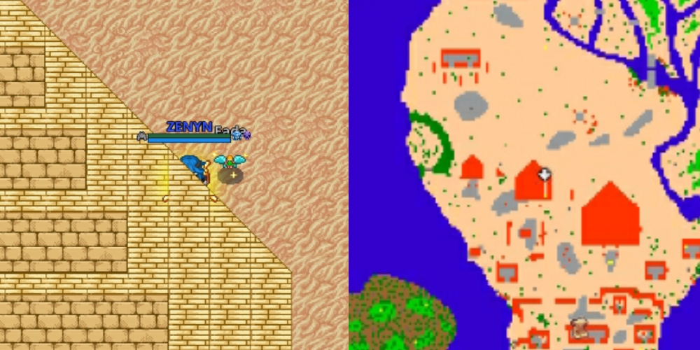

Coletando a Caçada Enfurecida
Posicione-se na localização "931,189,0" e ande para baixo até cair na sala oculta.

Clique no pergaminho para coletar a missão.

Acessando a Caçada Enfurecida
Após entregar os itens necessários, encontre o portal da enfurecida na localização "1045,121,0".